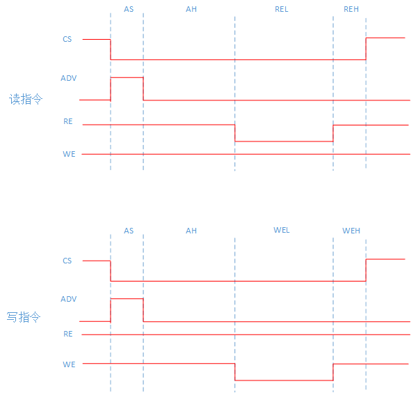

1. PPI Component
1.1. PPI Feature Introduction
Supports 4 CS ports, each of which can be configured separately: address range (base address needs to be aligned with 1MB), port bit width (supports 8/16/32 bits) and command sequence (start/end index of command)
There is a 32 bits data/address bus that supports: 32 bits data + 32 bits address (multiplexing mode), 16 bits data + 32 bits address (multiplexing mode), 8 bits data + 32 bits address (multiplexing mode), 16 bits data + 16 bits address (non multiplexing mode), 8 bits data + 24 bits address (non multiplexing mode)
There are 4 valid byte selection ports (DM signal, used for SRAM’s UB/LB and other signals)
There are 8 control lines (used for SRAM’s WE/OE/ADV signals)
There is 1 clock line output (supporting clock always output and following instruction sequence output)

1.2. PPI Configuration Introduction
CS Configuration The CS configuration structure is as follows:
typedef struct { ppi_port_size_t port_size; uint16_t addr_start_high_12bits; /* address space: 0xF8000000 ~ 0xFFFFFFFF */ uint16_t addr_end_high_12bits; /* address space: 0xF8000000 ~ 0xFFFFFFFF */ uint16_t addr_mask; bool sync_clk_en; uint8_t sync_clk_sel; uint8_t interval_cycle; uint8_t rcmd_start0; uint8_t rcmd_end0; uint8_t rcmd_start1; uint8_t rcmd_end1; uint8_t wcmd_start0; uint8_t wcmd_end0; uint8_t wcmd_start1; uint8_t wcmd_end1; #if defined(HPM_IP_FEATURE_PPI_DM_POLARITY_EACH_CS) && HPM_IP_FEATURE_PPI_DM_POLARITY_EACH_CS ppi_dm_valid_polarity_t dm_polarity; #endif } ppi_cs_pin_config_t; /**< ppi_cs_pin_config_t */
The PPI memory address space is from 0xF800000 to 0xFFFFFFFF, which is Noncacheable attribute by default and can be configured as the Cacheable attribute through PMP. Note: PPI memory address space cacheable attribute only support: MEM_TYPE_MEM_WB_READ_WRITE_ALLOC - Memory, Write-back, Write-Allocate, Read-Allocate.
port_size is the port bit width, addr_start_high_12bits and addr_end_high_12bits are the top 12 bits of the start address and the top 12 bits of the end address, and addr_mask is the top 16 bit address mask.
sync_clk_en is whether to enable synchronization of the clock, sync_clk_sel is the time selection for CS output effective level (range from 0 to clkpin_cfg. cycle), and interval_cycle is the command interval time (unit: system clock cycle).
rcmd_start0 and rcmd_end0 are the start/end indexes of the first read command, while wcmd_start0 and wcmd_end0 are the start/end indexes of the first write command; rcmd_start1 and rcmd_end1 are the start/end indexes for the second and subsequent read commands, while wcmd_sart1 and wcmd_end1 are the start/end indexes for the second and subsequent write commands. For example, some devices that support burst transmission may have different timing for first and subsequent access, so each device can configure different command sequences for first and subsequent access. The start/end index corresponds to an index of 64 command words, ranging from 0 to 63.
CMD Configuration - There are a total of 64 command words, shared by 4 CS. - Each data transmission can be divided into several segments, each described by a command word. For example, in the following chapter “Introduction to PPI Components”, read/write instructions are divided into four segments. - For each segment, the duration (cmd_cycle), output level of CS pin (cs_pin_value), DQ pin function (ad_func_sel, data/address, 1 byte per group), DQ pin direction (ad_pin_dir, input/output, 1 byte per group), source of output bytes (byte_sel), level of 8 control lines (ctrl_pin_value), clock output enable (clk_output, clock pin is effective in cmd control output mode) can be configured. The structure of the CMD command word is as follows:
typedef struct { bool cs_pin_value; bool clk_output; uint8_t cmd_cycle; ppi_ad_func_t ad_func_sel[4]; ppi_ad_pin_dir_t ad_pin_dir[4]; ppi_byte_sel_t byte_sel[4]; bool ctrl_pin_value[8]; } ppi_cmd_config_t; /**< ppi_cmd_config_t */
Control Pins Configuration - There are a total of 8 control signal pins. - The direction and polarity of each control pin can be independently configured, and the configured APIs are as follows:
static inline void ppi_config_ctrl_pin_polarity(PPI_Type *ppi, uint8_t index, ppi_ctrl_polarity_t pol); static inline void ppi_set_ctrl_pin_dir(PPI_Type *ppi, uint8_t index, ppi_ctrl_pin_dir_t dir);
Clock Pin Configuration - There is a total of 1 clock signal output. - The clock has two working modes: (1) always output; (2) The output is controlled by CMD, that is, ppi_cmdunconfig.clk_output controls the clock output. - The structure of clock pin configuration is as follows:
typedef struct { uint8_t cycle_num; uint8_t high_num; uint8_t low_num; ppi_clk_output_mode_t mode; bool revert; } ppi_clk_pin_config_t; /**< ppi_clk_pin_config_t */
Among them, the three parameters of cycle_num, high_num, and low_num control the cycle of the output clock, the mode configures the working mode, and the revert controls whether the clock output is reversed.
1.3. PPI Component
At present, PPI components have implemented asynchronous SRAM read and write timing, supporting address/data multiplexing mode and non multiplexing mode. The corresponding pins for each mode are as follows:
AD multiplexing |
Data |
Address |
Address Latch |
|---|---|---|---|
32 bits data + 32 bits address |
D0 - D31 : DQ0 - DQ31 |
A0 - A31 : DQ0 - DQ31 |
DQ0 - DQ31 need address latch |
16 bits data + 32 bits address |
D0 - D15 : DQ0 - DQ15 |
A0 - A31 : DQ0 - DQ31 |
DQ0 - DQ15 need address latch, while DQ15 - DQ31 don’t need address latch |
8 bits data + 32 bits address |
D0 - D7 : DQ0 - DQ7 |
A0 - A31 : DQ0 - DQ31 |
DQ0 - DQ7 need address latch, while DQ8 - DQ31 don’t need address latch |
AD Non multiplexing |
Data |
Address |
|---|---|---|
16 bits data + 16 bits address |
D0 - D15 : DQ0 - DQ15 |
A0 - A15 : DQ16 - DQ31 |
8 bits data + 24 bits address |
D0 - D7 : DQ0 - DQ7 |
A0 - A23 : DQ8 - DQ31 |
Note: Support DQ signals selection. For example, DQ0-7 signals select PPI’s DQ8-15 pins.
The structure of asynchronous SRAM configuration is as follows:
typedef struct {
uint32_t base_address; /**< external SRAM base address, should be 1MB aligned */
uint32_t size_in_byte; /**< external SRAM size in byte */
ppi_port_size_t port_size; /**< port size */
bool ad_mux_mode; /**< addr and data mux mode */
bool cs_valid_polarity; /**< cs valid polarity */
bool dm_valid_polarity; /**< dm valid polarity */
bool addr_valid_polarity; /**< addr valid polarity */
uint8_t adv_ctrl_pin; /**< adv ctrl pin number, 0 - 7 */
uint8_t rel_ctrl_pin; /**< rel ctrl pin number, 0 - 7 */
uint8_t wel_ctrl_pin; /**< wel ctrl pin number, 0 - 7 */
uint16_t as_in_ns; /**< address setup time */
uint16_t ah_in_ns; /**< address hold time */
uint16_t rel_in_ns; /**< RE low time */
uint16_t reh_in_ns; /**< RE high time */
uint16_t wel_in_ns; /**< WE low time */
uint16_t weh_in_ns; /**< WE high time */
ppi_dq_pins_t dq_sig_sel[4]; /**< dq signal selection.
* dq_sig_sel[0] is signal dq0-7 select ppi dq pins,
* dq_sig_sel[1] is signal dq8-15 select ppi dq pins,
* dq_sig_sel[2] is signal dq16-23 select ppi dq pins,
* dq_sig_sel[3] is signal dq24-31 select ppi dq pins.
*/
} ppi_async_sram_config_t;
The corresponding read and write timing diagram is:
Among them, CS is the chip selection signal and ADV, RE, and WE are control signals (selected from 8 control lines). The valid polarity of CS, ADV, and DM can be configured.
The API for configuring asynchronous SRAM in PPI components is as follows. Each CS configuration will occupy 8 CMD command words, so cmd_start_index needs to be set to a multiple of 8, such as 0, 8, 16, 24, etc.
/**
* @brief config async sram
*
* @param[in] ppi PPI base address
* @param[in] cs_index cs index, value: 0 - 3
* @param[in] cmd_index cmd start index, should be a multiple of 8, such as 0, 8, 16, 24 ...
* @param[in] config async sram config structure pointer, @ref ppi_async_sram_config_t
*/
void ppi_config_async_sram(PPI_Type *ppi, uint8_t cs_index, uint8_t cmd_start_index, ppi_async_sram_config_t *config);